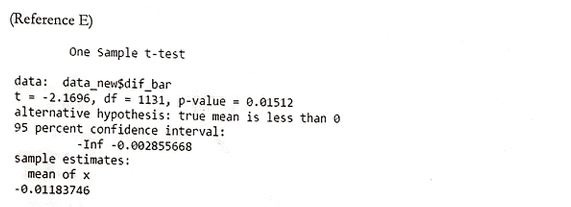

Inadequacies in Self-Evaluation
What keeps us away from intimate understanding of our own capabilities?
Summary
Accurate self-assessment regarding one's competence in completing a task is a critical life skill that is often not given the recognition it deserves. With it, the challenges one can take can be more manageable, the negative side effects of hubris can be counteracted, and society can run more efficiently. For this study, individuals were provided with a set of 25 questions and were asked to rate how confident they are at being able to solve the problem. Afterward, the same individuals were asked to solve said problems to measure how accurate their self-assessments were.
Analysis of the dataset provided by Prof. Ed Nuhfer (henceforth "Client") uncovered interesting results. Statistical tests support the existence of the Dunning-Kruger Effect, which states that relatively unskilled people suffer illusory superiority and mistakenly assess their abilities to be much higher than they are. Additional discoveries suggest that women tend to underestimate themselves more compared to men but are more accurate in their self-assessments overall. Students and professors who majored in or dealt with science-related fields tended to be more accurate than students from other areas of study. The study also shows that by participating in the study, individuals can improve their self-assessments even without the evaluations of their self-assessments. The variables including race/ethnicity, region, type of institution, and other specific areas of study remain to be explored in future studies.
Introduction
An individual's self-assessment and the tendency to perceive their skills accurately or inaccurately has been an age-old debate with nearly two decades of research. Currently, three working hypotheses exist.
- Measures of self-assessed competence are inherently random and do not hold any significant relationship with demonstrated competence.
- Most people are unskilled and unaware of their unskilled nature, having a strong propensity toward overestimation (the so-called Dunning-Kruger Effect).
- Most people's self-assessments are generally in accord with their competence.
In this study, a convenient sample of individuals was given 25 scientific questions that do not require memorized facts or calculations. First, they were asked to rate how confident they are for the overall test, then they were instructed to rank their confidence level [Fully Confident, Partial Knowledge, Inadequate] for the individual questions. Afterward, they solve the questions and were given a score for their accuracy.
The dataset included the results from over 1150 individuals. Each entry consists of variables including Confidence Level [0, 1, 2], Accuracy [0, 1], Gender [Male, Female], First Generation College Student [0, 1], Science-related Major [0, 1], Educational Level (1st, 2nd, 3rd, 4th, graduate, professor], Number of Completed College Science Courses, Calendar System [Quarter, Semester, Trimester, Other], English as a First Language [0, 1], and Race/Ethnicity.
The primary objective of this study is to determine the existence of the Dunning-Kruger Effect and to address the likelihood of random guessing in effect. The secondary objective is to observe the impact of other variables, such as gender, educational level, or major, on the accuracy of the self-assessment. Individual's race/ethnicity, institution's calendar system, number of completed college science courses, were left as a part of future study.
Approaches and Results
To assess an individual's accuracy as defined by the study, there are two general approaches. One is to compare the overall self-assessment score that the participant provided before the evaluation with the results of the evaluation. The other method is to pair an individual's confidence regarding an individual question with the individual's accuracy. As the questions in each set were the same and were answered by the same individual, the second method is preferred and thus utilized in this analysis.
Reference A found below is a breakdown of the scores individuals were given based on their confidence and their actual results that account for the "Maybe" option that the individuals were presented with. Note that positive scores imply underestimation and negative scores imply overestimation.
Reference B is a histogram with the average of the individual's scores for the x-axis and the frequency for the y-axis. Reference B seems to support that, in general, the collective group is mostly accurate in their self-assessment as the graph displays a normal curve shape centered around 0.
However, the Q-Q Plot shown in Reference C is heavy-tailed. This implies that the data has more extreme values than would be expected if they truly came from a normal distribution. Thus, as the normality assumption is violated, the results from a normal t-test cannot be trusted.
To address the violation of the normal assumption, a histogram was constructed (Reference D) to assess the significance of a null hypothesis in the form of Ho: Mean = 0 using bootstrapping methods. As the histogram reveals a lower mean than can be expected if the assessments were correct the study supports the presence of the Dunning-Kruger Effect. This is further backed by a one-sample t-test (Reference E) and the loess regression model (Reference F).
Note that loess regressions are a nonparametric technique that uses locally weighted regression to fit a smooth curve through points in a scatter plot. This is utilized as the loess curves can reveal trends that are typically harder to model in a parametric curve.
Reference G displays a density graph of the two genders, with males as 0 and females as 1. The general tendency for a female to be more accurate can be observed. Furthermore, a two-sample t-test (Reference H) was conducted to verify that the mean difference for females is significantly different from the mean difference for males. On average, males slightly overestimate self-competence and females slightly underestimate their knowledge.
Similarly to Reference G, a density graph featuring educational level was plotted (Reference I). Rank 1 through 4 refers to the respective college years, Rank 5 refers to graduate students, and Rank 6 refers to professors. Note that graduate student data may present errors as it is almost strictly from graduate students majoring in education. Furthermore, note that the plot for Rank 6 (professors) has two peaks. While no definite comment can be made, it appears as though a continuation of education, in general, provides a more accurate self-assessment. The second peak from the Rank 6 (professors) population implies that the individual's self-assessment is either very accurate or very overestimated when it comes to that group.
Reference J and K refer to the difference between students and professors who are majoring in or have majored in areas of study that required courses in science outside of the basic requirement level and those who do/ have not. Reference J is a density plot similar to previous references. Reference K is the results of the two-sample t-test that states that the difference between the two groups is significant. The results imply that science-related courses give a more accurate self-assessment. However, as the questions were generally designed with scientific thinking and concepts in mind, the results may be biased.
To determine the impact of the action of answering the questions, the scores from the first 10 questions were compared with scores from the last 15 questions. Reference L shows a density graph with the results from the first 10 questions as blue and the last 15 questions as yellow. Reference M is a two-sample t-test that verifies that there is a significant difference between the two groups. Interestingly, individuals tended to overestimate their competence more in the last 15 questions. However, it is important to note that this change may not be the impact of previous questions on the next question. Multiple causes, such as fatigue or the difficulty in progression may result in this trend.
Lastly, the notion that the individual's self-assessment of competence is random must be addressed. To do so, a binomial proportions test (Reference N) is used to measure the difference in proportions between under-assessor's and over-assessor's, which would be at or lower than 0.25 in a true random-guessing scenario. As the test statistic 943.822 is greater than the critical value of 1.6462, the null hypothesis that proportion is less than .25 is rejected at the critical value of 0.05.
Note that similar methods can be implemented on the individual level to determine if there were any that randomly guessed through the evaluation.
Conclusion
It is critical to understand the nature of an individual's self-assessment of competence. It allows scholars to paint a more accurate picture of humanity and serves as a background for other studies to be built on. This study provided confident evidence for the existence of the Dunning-Kruger Effect in play. More specifically, individuals with lower skills have a general tendency to overestimate their competence while individuals with higher skills tend to slightly underestimate or be accurate in their self-assessment. An effective measure to determine an individual's likelihood of random guessing and the unlikelihood that the dataset was derived from inherently random data was discussed. The study also shows that, while the cause for the effect remains to be discussed, males have a greater tendency to overestimate themselves than females, making females significantly more accurate in their assessment.